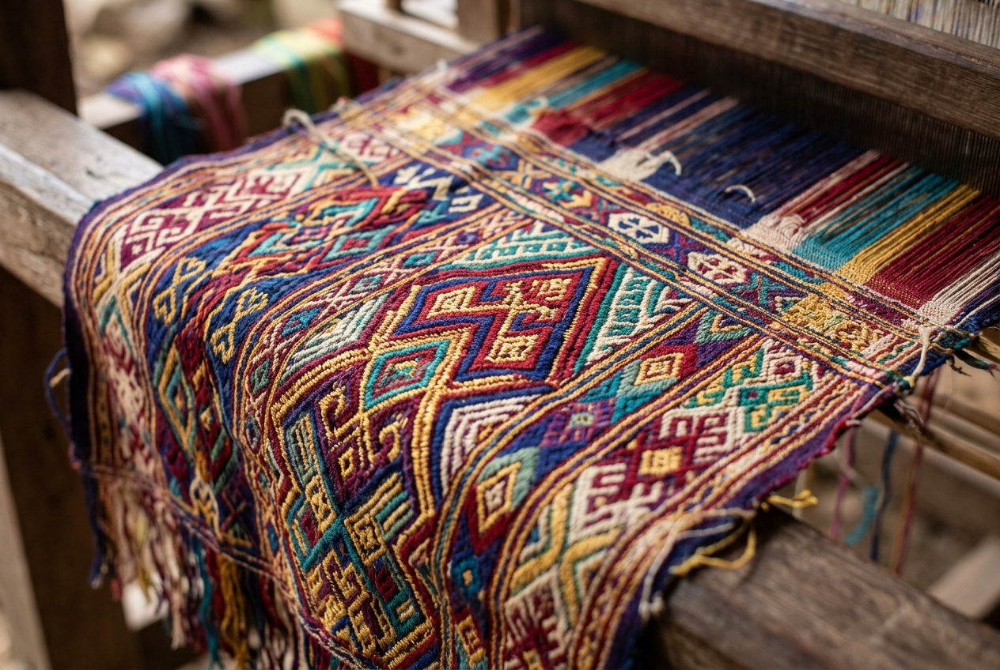

Lombok Utara, NTB

Desa Adat Bayan merupakan pusat komunitas suku Sasak Bayan yang masih memegang teguh adat tradisi Komunitas Wetu Telu. Di kawasan ini berdiri Masjid Kuno Bayan Beleq (berusia lebih dari 300 tahun) serta pemukiman rumah adat berdinding anyaman bambu dan atap ilalang.
Status Kunjungan: Minim pengunjung komersial (kurang dari 5% total turis Lombok), sangat alami, dan belum banyak tersentuh pariwisata massal.
Lihat lokasi tepat Desa Adat Bayan di bawah ini. Anda dapat memperbesar, memperkecil, dan melihat area sekitarnya.